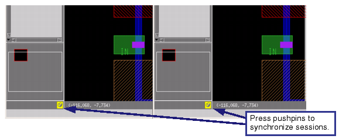

When you want
to look at two designs simultaneously, you can load them into separate
windows. When you open two or more layouts in their respective windows
within one Calibre DESIGNrev session, you can synchronize the panning
and zooming operations.
Procedure
- Open the first design in the
layout viewer either on invocation using the -m command line option
or by choosing .
- Choose to open a new Calibre
DESIGNrev window.
This
automatically opens the layout you opened in the first step.
- Use one of the following methods
to open a layout or bookmark in the new window:
If you want to...
|
Do the following:
|
|---|
Open a layout
|
Choose .
|
Open a previously-saved bookmark
|
Choose the bookmark name
from the Bookmarks menu.
|
- Move and resize the two windows
so both are visible at the same time.
- Adjust the views as needed
so you are comparing the correct portions of the layout:
If you want to...
|
Do the following:
|
|---|
Compare two versions
of the same layout
|
Adjust the view in the first layout.
Choose to
read the coordinates and zoom level from the Go To dialog box.
In the second layout, choose and enter
the coordinates along with the zoom level into the Go To dialog
box, and click Apply to see the same feature.
|
Compare two different layouts
|
Use the cell browser to display the same cell.
Use panning and zooming to find the areas
that interest you.
Use the Find Object Toolbar to find the
objects that interest you
|
- Click the pushpin button located
at the bottom of the Layout Navigator (refer to Figure 1) to turn on synchronization mode.
Figure 1. Side-by-Side Windows